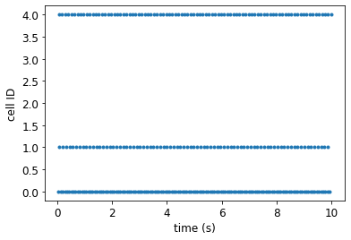
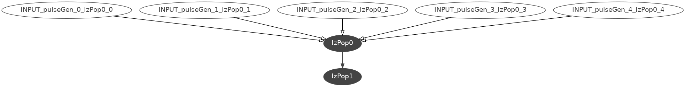
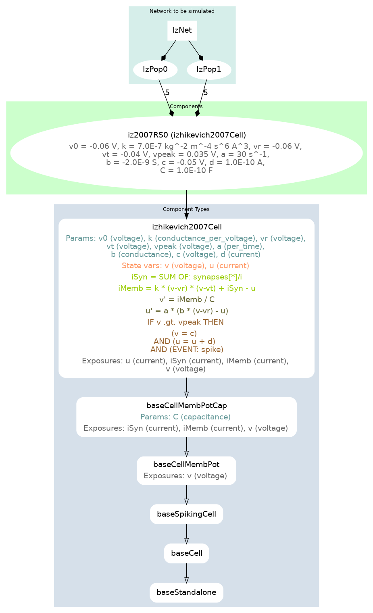

A two population network of regular spiking Izhikevich neurons¶
Now that we have defined a cell, let us see how a network of these cells may be declared and simulated. We will create a small network of cells, simulate this network, and generate a plot of the spike times of the cells (a raster plot):

Fig. 2 Spike times of neurons recorded from the simulation.¶
The Python script used to create the model, simulate it, and generate this plot is below:
#!/usr/bin/env python3
"""
Create a simple network with two populations.
"""
from neuroml import NeuroMLDocument
from neuroml import Izhikevich2007Cell
from neuroml import Network
from neuroml import ExpOneSynapse
from neuroml import Population
from neuroml import Projection
from neuroml import PulseGenerator
from neuroml import ExplicitInput
from neuroml import Connection
import neuroml.writers as writers
import random
from pyneuroml import pynml
from pyneuroml.lems import LEMSSimulation
import numpy as np
nml_doc = NeuroMLDocument(id="IzNet")
iz0 = Izhikevich2007Cell(
id="iz2007RS0", v0="-60mV", C="100pF", k="0.7nS_per_mV", vr="-60mV",
vt="-40mV", vpeak="35mV", a="0.03per_ms", b="-2nS", c="-50.0mV", d="100pA")
nml_doc.izhikevich2007_cells.append(iz0)
syn0 = ExpOneSynapse(id="syn0", gbase="65nS", erev="0mV", tau_decay="3ms")
nml_doc.exp_one_synapses.append(syn0)
net = Network(id="IzNet")
nml_doc.networks.append(net)
size0 = 5
pop0 = Population(id="IzPop0", component=iz0.id, size=size0)
net.populations.append(pop0)
size1 = 5
pop1 = Population(id="IzPop1", component=iz0.id, size=size1)
net.populations.append(pop1)
proj = Projection(id='proj', presynaptic_population=pop0.id,
postsynaptic_population=pop1.id, synapse=syn0.id)
net.projections.append(proj)
random.seed(921)
prob_connection = 0.5
count = 0
for pre in range(0, size0):
pg = PulseGenerator(
id="pulseGen_%i" % pre, delay="0ms", duration="10000ms",
amplitude="%f nA" % (0.1 * random.random())
)
nml_doc.pulse_generators.append(pg)
exp_input = ExplicitInput(target="%s[%i]" % (pop0.id, pre), input=pg.id)
net.explicit_inputs.append(exp_input)
for post in range(0, size1):
if random.random() <= prob_connection:
syn = Connection(id=count,
pre_cell_id="../%s[%i]" % (pop0.id, pre),
synapse=syn0.id,
post_cell_id="../%s[%i]" % (pop1.id, post))
proj.connections.append(syn)
count += 1
nml_file = 'izhikevich2007_network.nml'
writers.NeuroMLWriter.write(nml_doc, nml_file)
print("Written network file to: " + nml_file)
pynml.validate_neuroml2(nml_file)
simulation_id = "example_izhikevich2007network_sim"
simulation = LEMSSimulation(sim_id=simulation_id,
duration=10000, dt=0.1, simulation_seed=123)
simulation.assign_simulation_target(net.id)
simulation.include_neuroml2_file(nml_file)
simulation.create_event_output_file(
"pop0", "%s.spikes.dat" % simulation_id, format='ID_TIME'
)
for pre in range(0, size0):
simulation.add_selection_to_event_output_file(
"pop0", pre, 'IzPop0[{}]'.format(pre), 'spike')
lems_simulation_file = simulation.save_to_file()
pynml.run_lems_with_jneuroml_neuron(
lems_simulation_file, max_memory="2G", nogui=True, plot=False
)
# Load the data from the file and plot the spike times
# using the pynml generate_plot utility function.
data_array = np.loadtxt("%s.spikes.dat" % simulation_id)
pynml.generate_plot(
[data_array[:, 1]], [data_array[:, 0]],
"Spike times", show_plot_already=False,
save_figure_to="%s-spikes.png" % simulation_id,
xaxis="time (s)", yaxis="cell ID",
linestyles='', linewidths='0', markers=['.'],
)
As with the previous example, we will step through this script to see how the various components of the network are declared in NeuroML before running the simulation and generating the plot.
Declaring the model in NeuroML¶
To declare the complete network model, we must again first declare its core entities:
nml_doc = NeuroMLDocument(id="IzNet")
iz0 = Izhikevich2007Cell(
id="iz2007RS0", v0="-60mV", C="100pF", k="0.7nS_per_mV", vr="-60mV",
vt="-40mV", vpeak="35mV", a="0.03per_ms", b="-2nS", c="-50.0mV", d="100pA")
nml_doc.izhikevich2007_cells.append(iz0)
syn0 = ExpOneSynapse(id="syn0", gbase="65nS", erev="0mV", tau_decay="3ms")
nml_doc.exp_one_synapses.append(syn0)
Here, we create a new document, declare the Izhikevich neuron, and also declare the synapse that we are going to use to connect one population of neurons to the other.
Here we intend to use the ExpOne Synapse, where the conductance of the synapse increases instantaneously by a constant value gbase on receiving a spike, and then decays exponentially with a decay constant tauDecay.
We can now declare our cell populations:
net = Network(id="IzNet")
nml_doc.networks.append(net)
size0 = 5
pop0 = Population(id="IzPop0", component=iz0.id, size=size0)
net.populations.append(pop0)
size1 = 5
pop1 = Population(id="IzPop1", component=iz0.id, size=size1)
net.populations.append(pop1)
Next, we create projections between the two populations based on some probability of connection. To do this, we iterate over each post-synaptic neuron for each pre-synaptic neuron and draw a random number between 0 and 1. If the drawn number is less than the required probability of connection, the connection is created.
While we are iterating over all our pre-synaptic cells here, we also add external inputs to them. (This could have been done in a different loop, but it is convenient to also do this here.)
proj = Projection(id='proj', presynaptic_population=pop0.id,
postsynaptic_population=pop1.id, synapse=syn0.id)
net.projections.append(proj)
random.seed(921)
prob_connection = 0.5
count = 0
for pre in range(0, size0):
pg = PulseGenerator(
id="pulseGen_%i" % pre, delay="0ms", duration="10000ms",
amplitude="%f nA" % (0.1 * random.random())
)
nml_doc.pulse_generators.append(pg)
exp_input = ExplicitInput(target="%s[%i]" % (pop0.id, pre), input=pg.id)
net.explicit_inputs.append(exp_input)
for post in range(0, size1):
if random.random() <= prob_connection:
syn = Connection(id=count,
pre_cell_id="../%s[%i]" % (pop0.id, pre),
synapse=syn0.id,
post_cell_id="../%s[%i]" % (pop1.id, post))
proj.connections.append(syn)
count += 1
We can now save and validate our model, as before:
nml_file = 'izhikevich2007_network.nml'
writers.NeuroMLWriter.write(nml_doc, nml_file)
print("Written network file to: " + nml_file)
pynml.validate_neuroml2(nml_file)
The generated NeuroML model¶
Let us take a look at the generated NeuroML model
<neuroml xmlns="http://www.neuroml.org/schema/neuroml2" xmlns:xs="http://www.w3.org/2001/XMLSchema" xmlns:xsi="http://www.w3.org/2001/XMLSchema-instance" xsi:schemaLocation="http://www.neuroml.org/schema/neuroml2 https://raw.github.com/NeuroML/NeuroML2/development/Schemas/NeuroML2/NeuroML_v2.1.xsd" id="IzNet">
<expOneSynapse id="syn0" gbase="65nS" erev="0mV" tauDecay="3ms"/>
<izhikevich2007Cell id="iz2007RS0" C="100pF" v0="-60mV" k="0.7nS_per_mV" vr="-60mV" vt="-40mV" vpeak="35mV" a="0.03per_ms" b="-2nS" c="-50.0mV" d="100pA"/>
<pulseGenerator id="pulseGen_0" delay="0ms" duration="10000ms" amplitude="0.098292 nA"/>
<pulseGenerator id="pulseGen_1" delay="0ms" duration="10000ms" amplitude="0.076471 nA"/>
<pulseGenerator id="pulseGen_2" delay="0ms" duration="10000ms" amplitude="0.033444 nA"/>
<pulseGenerator id="pulseGen_3" delay="0ms" duration="10000ms" amplitude="0.010134 nA"/>
<pulseGenerator id="pulseGen_4" delay="0ms" duration="10000ms" amplitude="0.080287 nA"/>
<network id="IzNet">
<population id="IzPop0" component="iz2007RS0" size="5"/>
<population id="IzPop1" component="iz2007RS0" size="5"/>
<projection id="proj" presynapticPopulation="IzPop0" postsynapticPopulation="IzPop1" synapse="syn0">
<connection id="0" preCellId="../IzPop0[0]" postCellId="../IzPop1[0]"/>
<connection id="1" preCellId="../IzPop0[0]" postCellId="../IzPop1[1]"/>
<connection id="2" preCellId="../IzPop0[0]" postCellId="../IzPop1[3]"/>
<connection id="3" preCellId="../IzPop0[1]" postCellId="../IzPop1[1]"/>
<connection id="4" preCellId="../IzPop0[1]" postCellId="../IzPop1[3]"/>
<connection id="5" preCellId="../IzPop0[2]" postCellId="../IzPop1[2]"/>
<connection id="6" preCellId="../IzPop0[2]" postCellId="../IzPop1[3]"/>
<connection id="7" preCellId="../IzPop0[3]" postCellId="../IzPop1[2]"/>
<connection id="8" preCellId="../IzPop0[4]" postCellId="../IzPop1[1]"/>
</projection>
<explicitInput target="IzPop0[0]" input="pulseGen_0"/>
<explicitInput target="IzPop0[1]" input="pulseGen_1"/>
<explicitInput target="IzPop0[2]" input="pulseGen_2"/>
<explicitInput target="IzPop0[3]" input="pulseGen_3"/>
<explicitInput target="IzPop0[4]" input="pulseGen_4"/>
</network>
</neuroml>
It is easy to see how the model is clearly declared in the NeuroML file.
Observe how entities are referenced in NeuroML depending on their location in the document architecture.
Here, population and projection are at the same level.
The synaptic connections using the connection tag are at the next level.
So, in the connection tags, populations are to be referred to as ../ which indicates the previous level.
The explicitInput tag is at the same level as the population and projection tags, so we do not need to use ../ here to reference them.
Another point worth noting here is that because we’ve defined a population of the same components by specifying a size rather than by individually adding components to it, we can refer to the entities of the population using the common [..] index operator.
The advantage of such a declarative format is that we can also easily get information on our model from the NeuroML file.
pyNeuroML includes the helper pynml-summary script:
$ pynml-summary izhikevich2007_network.nml
*******************************************************
* NeuroMLDocument: IzNet
*
* ExpOneSynapse: ['syn0']
* Izhikevich2007Cell: ['iz2007RS0']
* PulseGenerator: ['pulseGen_0', 'pulseGen_1', 'pulseGen_2', 'pulseGen_3', 'pulseGen_4']
*
* Network: IzNet
*
* 10 cells in 2 populations
* Population: IzPop0 with 5 components of type iz2007RS0
* Population: IzPop1 with 5 components of type iz2007RS0
*
* 9 connections in 1 projections
* Projection: proj from IzPop0 to IzPop1, synapse: syn0
* 9 connections: [(Connection 0: 0 -> 0), ...]
*
* 0 inputs in 0 input lists
*
*******************************************************
We can also generate a graphical summary of our model using pynml:
$ pynml izhikevich2007_network.nml -graph 2
neuromllite >>> Initiating GraphViz handler, level 2, engine: dot, seed: 1234
Parsing: izhikevich2007_network.nml
Loaded: izhikevich2007_network.nml as NeuroMLDocument
....
This generates the following model summary diagram:
{kind=link}

Fig. 3 A summary graph of the model generated using pynml and the dot tool.¶
In our very simple network here, neurons do not have morphologies and are not distributed in space. In later examples, however, we will also see how summary figures of the network that show the morphologies, locations of different layers and neurons, and so on can also be generated using the NeuroML tools.
Simulating the model¶
Now that we have our model set up, we can proceed to simulating it. We create our simulation, and setup the information we want to record from it.
simulation_id = "example_izhikevich2007network_sim"
simulation = LEMSSimulation(sim_id=simulation_id,
duration=10000, dt=0.1, simulation_seed=123)
simulation.assign_simulation_target(net.id)
simulation.include_neuroml2_file(nml_file)
simulation.create_event_output_file(
"pop0", "%s.spikes.dat" % simulation_id, format='ID_TIME'
)
for pre in range(0, size0):
simulation.add_selection_to_event_output_file(
"pop0", pre, 'IzPop0[{}]'.format(pre), 'spike')
lems_simulation_file = simulation.save_to_file()
The generated LEMS file is here:
<Lems>
<!--
This LEMS file has been automatically generated using PyNeuroML v0.5.9 (libNeuroML v0.2.54)
-->
<!-- Specify which component to run -->
<Target component="example_izhikevich2007network_sim"/>
<!-- Include core NeuroML2 ComponentType definitions -->
<Include file="Cells.xml"/>
<Include file="Networks.xml"/>
<Include file="Simulation.xml"/>
<Include file="izhikevich2007_network.nml"/>
<Simulation id="example_izhikevich2007network_sim" length="10000ms" step="0.1ms" target="IzNet" seed="123"> <!-- Note seed: ensures same random numbers used every run -->
<EventOutputFile id="pop0" fileName="example_izhikevich2007network_sim.spikes.dat" format="ID_TIME">
<EventSelection id="0" select="IzPop0[0]" eventPort="spike"/>
<EventSelection id="1" select="IzPop0[1]" eventPort="spike"/>
<EventSelection id="2" select="IzPop0[2]" eventPort="spike"/>
<EventSelection id="3" select="IzPop0[3]" eventPort="spike"/>
<EventSelection id="4" select="IzPop0[4]" eventPort="spike"/>
</EventOutputFile>
</Simulation>
</Lems>
Where we had generated a graphical summary of the model before, we can now also generate graphical summaries of the simulation using jnml:
$ jnml LEMS_example_izhikevich2007network_sim.xml -graph
jNeuroML v0.10.1
(INFO) Reading from: .../NeuroML-Documentation/source/Userdocs/NML2_examples/LEMS_example_izhikevich2007network_sim.xml
(INFO) simCpt: Component(id=example_izhikevich2007network_sim type=Simulation)
Writing to: .../NeuroML-Documentation/source/Userdocs/NML2_examples/LEMS_example_izhikevich2007network_sim.gv
Have successfully run command: dot -Tpng .../NeuroML-Documentation/source/Userdocs/NML2_examples/LEMS_example_izhikevich2007network_sim.gv -o .../NeuroML-Documentation/source/Userdocs/NML2_examples/LEMS_example_izhikevich2007network_sim.png
Here is the generated summary graph:
{kind=link}

Fig. 4 A summary graph of the model generated using jnml.¶
It shows a top-down breakdown of the simulation: from the network, to the populations, to the cell types, leading up to the components that these cells are made of (more on Components later). Let us add the necessary code to run our simulation, this time using the well known NEURON simulator:
pynml.run_lems_with_jneuroml_neuron(
lems_simulation_file, max_memory="2G", nogui=True, plot=False
)
Plotting recorded spike times¶
To analyse the outputs from the simulation, we can again plot the information we recorded. In the previous example, we had recorded and plotted the membrane potentials from our cell. Here, we have recorded the spike times. So let us plot them to generate our figure:
# Load the data from the file and plot the spike times
# using the pynml generate_plot utility function.
data_array = np.loadtxt("%s.spikes.dat" % simulation_id)
pynml.generate_plot(
[data_array[:, 1]], [data_array[:, 0]],
"Spike times", show_plot_already=False,
save_figure_to="%s-spikes.png" % simulation_id,
xaxis="time (s)", yaxis="cell ID",
linestyles='', linewidths='0', markers=['.'],
)
Observe how we are using the same generate_plot utility function as before: it is general enough to plot different recorded quantities.
Under the hood, it passes this information to Python’s Matplotlib library.
This concludes our second example. Here, we have seen how to create, simulate, and record from a simple two population network of single compartment point neurons. The next section is an interactive notebook that you can use to play with this example. After that we will move on to the next example: a single but more detailed multi-compartmental neuron model.